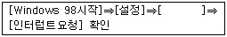
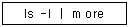
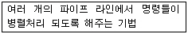
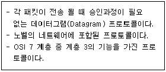

PC정비사-1급 (2004-05-09 기출문제)
1과목: PC운영체제
1. 주기억 장치와 CPU의 속도차가 크므로, 인스트럭션의 수행 속도를 CPU 속도에 맞추기 위한 완충 장치로써 사용하는 메모리는?
- RAM
- ROM
- Cache
- RPROM
(정답률: 알수없음)

2. 마우스(mouse)의 IRQ를 Windows 98에서 확인하고 싶다. 다음 [ ]에 적합한 것은?

- [제어판]⇒[시스템]⇒[장치관리자]⇒[마우스]⇒[리소스]
- [제어판]⇒[장치관리자]⇒[시스템]⇒[마우스]⇒[제어기]
- [제어판]⇒[마우스]⇒[일반]⇒[장치관리자]⇒[리소스]
- [제어판]⇒[마우스]⇒[장치관리자]⇒[제어기]⇒[리소스]
(정답률: 알수없음)
3. Windows NT 계열 운영체제에서는 다양한 RAID를 지원한다. 이중 DISK의 사용률이 가장 좋으며 읽기 시간이 가장 빠른 형태의 RAID는?
- RAID 0
- RAID 1
- RAID 3
- RAID 5
(정답률: 39%)
4. 컴퓨터 시스템의 성능 극대화 측면에서 운영체제의 목적이 아닌 것은?
- 처리 능력의 증대
- 편의성의 극대화
- 신뢰도 향상
- 사용 가용도의 증대
(정답률: 알수없음)
5. Windows에서 디스크 검사, 디스크 정리 및 디스크 조각 모음 프로그램을 미리 예약하여 자동 실행할 수 있는 도구는?
- 시스템 정보 마법사
- 시스템 모니터 마법사
- 시스템 관리 마법사
- 시스템 지원 마법사
(정답률: 73%)
6. Windows 98에서는 단일 드라이브로 2GB 이상의 하드디스크 드라이브를 지원한다. 이것은 무엇 때문에 가능한가?
- 멀티부팅
- FAT32
- 디스크조각모음
- 시스템관리마법사
(정답률: 60%)
7. MS-DOS 명령어 중 외부 명령어(External Command)에 해당되는 것은?
- DIR
- COPY
- REN
- FORMAT
(정답률: 알수없음)
8. 메모리를 관리하는 프로그램이 아닌 것은?
- MEMMAKER.EXE
- EMM386.EXE
- HIMEM.SYS
- COMMAND.COM
(정답률: 73%)
9. 디스켓으로 부팅을 할 경우, CDROM 드라이브를 액세스 하기 위해 필요한 파일은?
- SMARDRV.EXE
- SHARE.EXE
- RAMDRIVE.EXE
- MSCDEX.EXE
(정답률: 알수없음)
10. 다음 Windows XP의 레지스트리 값들 중에서 기본 TTL값을 설정하는 것은?
- TcpWindowSize
- Tcp1323Option
- DefaultTTL
- SackOpt
(정답률: 알수없음)
11. Linux에 대한 설명으로 바르지 않은 것은?
- 누구나 무료로 이용할 수 있는 OS이다.
- 주로 인터넷 서버로 많이 사용한다.
- X-Windows를 통해 GUI 환경을 제공한다.
- Microsoft의 Windows와 호환되어 개인 사용자들이 많이 사용한다.
(정답률: 60%)
12. Linux의 명령을 실행한 결과를 화면 단위로 스크롤 시키기 위하여 다음과 같은 명령을 입력하였다. 이때 다음 화면을 스크롤 시키기 위한 키는?

- Enter
- Space Bar
- 방향키 아래방향
- Page Down
(정답률: 알수없음)
13. Linux에서 모든 파일의 목록과 자세한 사항을 내림차순으로 정렬하기 위한 명령은?
- ls -alc
- ls -als
- ls -alr
- ls -alf
(정답률: 알수없음)
14. 운영체제에서 CPU에 투입된 프로세스들을 스케쥴링 하기 위한 방법에 해당하지 않은 것은?
- Worst-fit 기법
- FIFO 기법
- SJF 기법
- SRT 기법
(정답률: 알수없음)
15. Windows 98에서 레지스트리 값을 변경하여 케이블 모뎀의 속도를 변화하려고 한다. 다음 중 어떠한 부분을 변경하여야 하는가?
- MSTCP
- Modem
- NetService
- Mouse
(정답률: 알수없음)
2과목: PC주변기기
16. SCSI 방식의 하드디스크를 구입했다. 이 하드디스크의 ID를 10으로 설정하려고 한다. A0, A1, A2, A3 네 개의 점퍼를 어떻게 설정해야 하는가?(단, 1은 ON, 0은 OFF)
- 1111
- 0101
- 1011
- 0011
(정답률: 알수없음)
17. CD-ROM 드라이브에 대한 설명 중 올바른 것은?
- CD-ROM의 표준인 ISO 6990 포맷을 지원한다면 어떤 데이터든지 읽어낼 수 있다.
- CD-ROM은 12배속까지는 등각속도로 데이터를 읽는다.
- CD-ROM은 컴퓨터와 연결하는 인터페이스 카드 방식에 따라 SCSI 방식과 E-IDE/IDE 방식으로 나눌 수 있다.
- CD-ROM의 성능은 가격과 버퍼의 용량이 좌우한다.
(정답률: 알수없음)
18. 메모리의 종류와 특성에 대한 일반적인 설명으로 옳은 것은?
- EPROM - 처음 기록된 내용만 유지하며 추가로 데이터를 기록할 수 없다.
- EDORAM - 고성능 컴퓨터에서 내부 클록 속도를 향상시키기 위해 사용한다.
- DRAM - 데이터를 기억시킬 때 1회 이상은 허용되지 않는다.
- SRAM - 전원이 꺼지기 전까지는 기억된 정보가 사라지지 않는다.
(정답률: 알수없음)
19. 섀도우 마스크 방식과 애피처 그릴 방식의 가장 큰 차이점은?
- 브라운관 앞의 형광물질의 차이
- 전자총의 주사방법의 차이
- 자기 편향고리의 작동방법의 차이
- 전자총의 초점을 맞추기 위한 격자 모양과 그릴 모양의 차이
(정답률: 알수없음)
20. 다음 중 차세대 영상 기록 매체로, 4.7GB∼17GB 대용량 데이터를 기록할 수 있는 DVD규격에 따른 용량 비교가 잘못된 것은(순서 : 규 격, 기록 면, 기록 방식, 용 량, 재생시간)?
- DVD-5, 1, 단층, 4.7GB, 133분
- DVD-9, 1, 복층, 8.5GB, 240분
- DVD-10, 2, 단층, 9.4GB, 266분
- DVD-15, 2, 복층, 17GB, 380분
(정답률: 24%)
21. 다음 중 마우스의 일반적인 설명과 거리가 먼 것은?
- 마우스는 2버튼과 3버튼 방식이 주로 쓰인다.
- 메뉴 선택, 방향 이동 등과 같은 미리 제시된 명령을 선택할 때 사용된다.
- 광 마우스는 마우스 아래에 있는 볼이 굴러가는 것을 감지하여 좌표에 옮기는 방식이다.
- 터치 패드와 트랙볼 형태의 마우스는 노트북 컴퓨터에 주로 사용된다.
(정답률: 알수없음)
22. 일반적인 Fast SCSI 어댑터를 두 개 설치하였을 때 주변장치를 연결할 수 있는 개수는?
- 7개
- 14개
- 15개
- 30개
(정답률: 알수없음)
23. 디지털 카메라의 내부 구성이 아닌 것은?
- 비디오 칩셋
- 마이크로 프로세스
- 플래시 메모리
- CCD
(정답률: 알수없음)
24. 다음은 펜티엄 CPU의 특징과 관련하여 무엇에 대한 설명인가?

- 분기예측
- 병렬처리
- 슈퍼 스컬러
- D.I.B.
(정답률: 40%)
25. 메인보드 상에 장착되어 있는 커넥터들을 나열한 것이다. 이 중 올바르지 않은 것은?
- IDE 디스크 드라이브 커넥터
- 플로피 드라이브 커넥터
- 메인보드 칩셋을 위한 소켓
- CPU를 장착할 수 있는 CPU 소켓
(정답률: 알수없음)
26. 메인보드에 제공되는 컨트롤러 중에서 CPU를 거치지 않고 PC의 메모리로 자료를 보내거나, 메모리의 자료를 다른 장치로 보내는 역할을 담당하는 것은?
- 키보드 컨트롤러
- DMA 컨트롤러
- 인터럽트 컨트롤러
- 프로그래머블 컨트롤러
(정답률: 알수없음)
27. 컴퓨터의 성능을 결정하는 것은 CPU지만, 메인보드의 성능 역시 무시 할 수 없다. 메인보드는 다른 장치들간의 데이터 흐름을 제어하는 칩셋에 따라 성능이 결정된다. 그렇다면, 이 메인보드 칩셋을 제어하는 소프트웨어는?
- 유틸리티
- CMOS 셋업 프로그램
- 운영체제
- 프로토콜
(정답률: 90%)
28. 모니터 및 그래픽 카드의 해상도와 밀접한 관계가 없는 것은?
- 그래픽 카드의 메모리
- 모니터 지원여부
- RAMDAC의 속도
- DDC 기능
(정답률: 알수없음)
29. 자장의 척력(밀어내는 힘)을 이용하여 근접한 트랙을 동시에 읽어 내는 것을 무엇이라 하는가?
- MR
- RLL
- FM
- LBA
(정답률: 60%)
30. 컴퓨터 데이터 기록을 담기 위한 CDROM이 수록된 규격은?
- 옐로우 북
- 레드 북
- 그린 북
- 오렌지 북
(정답률: 70%)
3과목: 디지털 논리회로
31. 멀티플렉서에 대한 설명으로 틀린 것은?
- 데이터선택기(Data Selector)기능을 갖는다.
- 일반적으로 2n개의 입력선과 n개의 선택선으로 구성된다.
- 여러 개의 데이터 입력을 적은 수의 채널이나 회선을 통해 전송하는 기술이다.
- 0과 1을 조합하여 특정한 부호로 표현하는 기능을 갖는다.
(정답률: 42%)
32. 주기억장치와 데이터 사이의 전송을 할 때 데이터를 보관하는 것은?
- 인덱스 레지스터
- 어드레스 레지스터
- 저장 레지스터
- 인스트럭션 레지스터
(정답률: 알수없음)
33. 정보의 크기 순으로 나열된 것은?
- 비트 - 바이트 - 워드 - 아이템 - 필드 - 레코드 - 파일
- 비트 - 바이트 - 워드 - 필드 - 아이템 - 레코드 - 파일
- 비트 - 바이트 - 아이템 - 워드 - 필드 - 레코드 - 파일
- 비트 - 바이트 - 워드 - 아이템 - 파일 - 레코드 - 필드
(정답률: 알수없음)
34. 다이오드에 관한 설명 중 틀린 것은?
- 한쪽 방향으로만 전류가 흐른다.
- 교류를 직류로 변환시키는 역할을 한다.
- 복조파에 실려있는 신호파형을 축출하는 것을 검파다이오드라고 한다.
- 제너다이오드는 역방향 전류가 가해졌을때 전압 변동이 크다.
(정답률: 64%)
35. 모든 디지털 시스템에는 클럭이 대부분 필요한데, 다음 중 클럭의 요구조건 중 거리가 먼 것은?
- High 및 Low레벨 전압이 안정할 것
- 상승 및 지연 시간이 장시간일 것
- 주파수가 안정할 것
- 수정발진기는 클럭의 요구조건을 잘 만족할 것
(정답률: 57%)
4과목: PC유지보수
36. PC에서 사용하는 비디오 카드의 어댑터 종류로 타당한 것은?
- PCI, VESA, AGP
- PCI, AGP, SCSI
- PCI, ATX, AGP
- AGP, SCSI, VESA
(정답률: 46%)
37. COM포트와 이에 해당하는 IRQ와 주소가 잘못 연결된 것은?
- COM1 - 4 - 03F8
- COM2 - 3 - 02F8
- COM3 - 4 - 02E8
- COM4 - 3 - 02E8
(정답률: 알수없음)
38. 피닉스 바이오스의 CMOS Setup에 대한 설명 중 잘못된 것은?
- Boot time Diagnostics Screen : “Enable'로 설정하면 부팅 진단 과정 상황이 표시되지 않는다.
- Boot Sequency : 부팅가능한 장치의 부팅 순서를 바꾼다.
- QuickBoot Mode : 'Enable'로 설정하면 빠른 부팅이 된다.
- After Power Failure : 정전, 파워 서플라이 이상등으로 컴퓨터 전원이 꺼졌을때 다시 전원이 들어온 경우의 상태를 지정할 수 있다.
(정답률: 25%)
39. 다음 중 PnP를 활용할 수 없는 경우는?
- Windows 98, 새 프린터 연결
- Windows XP, USB메모리 연결
- Windows 3.1, 새 프린터 연결
- Windows XP, 새 마우스연결
(정답률: 알수없음)
40. Windows 98로 부팅하려고 할 때 레지스트리 에러가 발생하였다. 그러므로 레지스트리를 수정하려고 한다. 현재의 레지스트리가 저장된 파일은?
- Win.ini
- Program.dat
- System.ini
- User.dat
(정답률: 알수없음)
41. Windows로 부팅할 때 마다 암호를 물어 보는데, 암호를 잊어버려 그냥 취소 버튼을 눌러서 부팅하고 있다. 이를 해결하는 방법으로 옳은 것은?
- ini 파일을 삭제한다.
- 자동시작 프로그램을 삭제한다.
- CMOS Setup의 Power Management기능을 Disable로 한다.
- 제어판 - 네트워크 - 기본 네트워크 로그온 - Windows 로그온
(정답률: 알수없음)
42. Windows를 사용하던 도중에 치명적인 오류가 불규칙적으로 발생한다. 특정 프로그램을 실행할 때만 아니라 광범위하게 발생한다. 이에 대한 일반적인 원인으로 바르지 않은 것은?
- 파티션 설정이 잘못되었다.
- 특정 S/W와 윈도우의 호환성 문제이다.
- 윈도우의 시스템 정보 파일에 오류가 발생하였다.
- 드라이버 파일에 오류가 발생하였다.
(정답률: 알수없음)
43. PC모니터를 디스플레이 방식으로 구분할 때, 올바르게 구분한 것은?
- D-SUB, BNC
- STN, DSTN, TFT
- 섀도우 마스크, 플래트론
- CRT, LCD
(정답률: 알수없음)
44. PCI 타입의 NIC에 대한 설명이다. 잘못 설명한 것은?
- LAN 인터페이스가 ISA방식보다 안정적이다.
- 장치끼리 IRQ를 공유할 수 있다.
- 버스마스터링은 중앙 처리 장치의 부하를 줄여준다.
- PnP 기능이 떨어진다.
(정답률: 알수없음)
45. 다음 정보들은 시스템 모니터를 통하여 확인되는 것들이다. 올바르지 않은 것은?
- 캐시 적중률-크기가 클수록 디스크 캐시가 효율적으로 관리
- 사용중인 스왑파일-가상 메모리로 사용되는 하드 디스크의 크기
- 스왑파일 크기-사용할 수 있는 가상 메모리의 여유 공간
- 디스크 캐시 크기 - 디스크 캐시로 할당된 램의 용량
(정답률: 29%)
46. 3차원 게임을 즐기기 위해 3D 그래픽 카드를 구입했는데, 3차원 게임에서 화면 처리 속도가 느리고 영상이 선명하게 보이지 않는다. 이런 문제의 해결책에 속하지 않는 것은?
- Direct X, Open GL 등의 규격과 그래픽 카드를 맞게 선택한다.
- 가속 표준을 그래픽 카드에서 지원하는 것으로 변경한다.
- 그래픽 카드 드라이버를 변경한다.
- 사운드 카드 드라이버를 변경한다.
(정답률: 알수없음)
47. ATX 메인보드에 대한 설명 중 잘못된 것은?
- 메인보드나 카드 등의 크기나 모양을 폼팩터(Form Factor)라고 하는데, ATX 방식은 바로 메인보드의 폼팩터를 의미하는 것이다.
- ATX 보드는 AT 방식의 메인보드를 90도 꺾어놓은 모양으로 되어 있다.
- PS/2, 패러렐 포트, 시리얼 포트, USB 포트 등이 메인보드의 측면에 달려있어 외부기기를 연결하기가 편리하다.
- 슬롯방식 CPU만을 지원한다.
(정답률: 알수없음)
48. 화상통신 시스템을 구성하려고 한다. 이때 Center of End 형에 해당하는 것은?
- 팩시밀리
- 케이블 TV
- 쌍방향 TV
- CCTV
(정답률: 알수없음)
49. EMI에 대한 설명 중에서 잘못된 것은?
- EMI는 미국이나 EU각국이 마련한 전자파 관련 규정중의 하나이다.
- EMI규격을 갖추지 않은 전기전자 제품에 대하여도 KS허가를 내고 있다.
- 국내에서는 90년대 중반부터 각종 전기전자 제품에 대한 EMI검정을 실시하고 있다.
- 전자파에 관한 장애 인증이다.
(정답률: 알수없음)
50. Windows를 설치하는 도중에 에러 메시지가 나타났다. 이러한 에러메시지에 대한 설명 중에서 잘못 설명한 것은?
- SU0017 : 언어 불일치 때문에 발생한 에러
- SU0358 : Windows 설치중에 다른 응용 프로그램이 실행 중이다.
- SU0019 : 도스의 초기화 파일에 호환되지 않은 명령어가 있다.
- SU0014 : 언어 불일치 때문에 발생한 에러이다.
(정답률: 알수없음)
5과목: PC네트워크
51. 인터넷을 사용하는데 있어 내부 보안에 심각한 문제가 발생할 경우 추가할 수 있는 일반적인 장치는?
- Router
- Bridge
- Gateway
- Firewall
(정답률: 알수없음)
52. 다음의 내용에 해당하는 프로토콜은?

- IP
- X.25
- TCP
- IPX
(정답률: 알수없음)
53. 다음 설명 중 적당하지 않은 것은?
- 게이트웨이는 네트워크와 네트워크를 연결해 주는 역할을 담당하는 네트워크 장비이다.
- DNS는 도메인 이름 서비스(Domain Name Service)의 약식 표기로서 숫자로 구성된 IP 주소를 기억하기 쉽도록 표현한 것이다.
- 도메인은 호스트 이름, 기관 이름, 기관의 분류 및 국가 등을 표현하고 있으며, 하나의 호스트는 하나의 도메인을 갖을 수 있다.
- 도메인 이름은 DNS 서버에 의해 대응하는 IP 주소로 변환되어 전송 목적지의 주소를 식별한다.
(정답률: 알수없음)
54. 클래스 C에 해당되는 IP 주소는?
- 107. 140. 23. 4
- 178. 140. 232. 5
- 217. 232. 147. 3
- 247. 231. 142. 3
(정답률: 알수없음)
55. 웹브라우저의 기본적인 환경(Netscape, Internet Explorer)에서 표현될 수 없는 파일 포맷은?
- *.htm
- *.gif
- *.jpg
- *.pcx
(정답률: 91%)
56. 다음의 전송 기술 중에서 홈 네트워킹에 적용되지 않는 것은?
- IEEE1394
- IrDA
- Bluetooth
- IEEE802.3
(정답률: 알수없음)
57. OSI 모델의 물리계층(Physical)에서 사용되는 것은?
- 브리지(Bridge)
- 리피터(Repeater)
- 게이트웨이(Gateway)
- 라우터(Router)
(정답률: 알수없음)
58. LAN에 사용되는 방식 중 전송속도가 가장 빠른 것은?
- 10BASE-2
- FDDI
- 10BASE-5
- 10BASE-T
(정답률: 알수없음)
59. ISO에서 제정한 네트워크 관리 모델에 속하지 않는 것은?
- 성능관리(performance management)
- 보안관리(security management)
- 고장관리(fault management)
- 품질관리(quality management)
(정답률: 50%)
60. S-HTTP와 SSL에 대한 설명으로 옳지 않은 것은?
- 네트워크 구조상 SSL은 S-HTTP보다 위에 위치하고 있다.
- SSL에서는 전자서명과 키 교환을 위해 RSA 방식을 이용한다.
- SSL은 보안기능을 강화하기 위하여 Server 인증, Message의 신뢰성, 무결성을 지원하고 있다.
- SSL은 주고받는 메시지를 암호화하고 그것을 해독하는 기능을 한다.
(정답률: 54%)